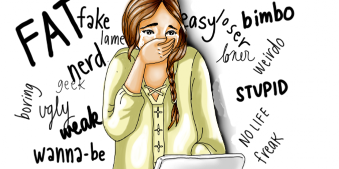

- Cyber-bullying: bullying through Internet applications and technologies such as instant messaging (IM), social networking sites, and cell phones. Sometimes using tactics such as:
- Flaming and Trolling – sending or posting hostile messages intended to “inflame” the emotions of others
- Happy-Slapping – recording someone being harassed or bullied in a way that usually involves physical abuse, then posting the video online for public viewing
- Identity Theft/Impersonation – stealing someone’s password and/or hijacking their online accounts to send or post incriminating or humiliating pictures, videos, or information
- Photoshopping – doctoring digital images so that the main subject is placed in a compromising or embarrassing situation
- Physical Threats – sending messages that involve threats to a person’s physical safety
- Rumor Spreading – spreading gossip through e-mail, text messaging, or social networking sites
- Did you know: One-third of online teens (ages 12-17) have been cyberbullied. Girls are more likely to be targeted!
